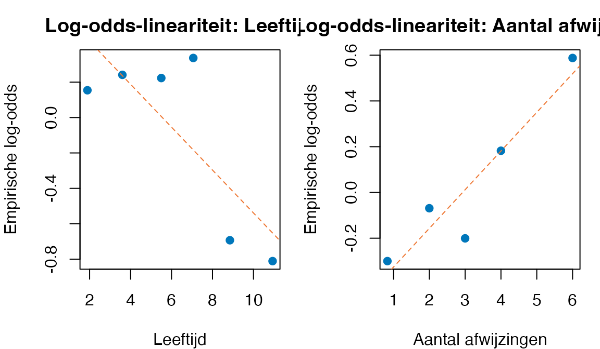
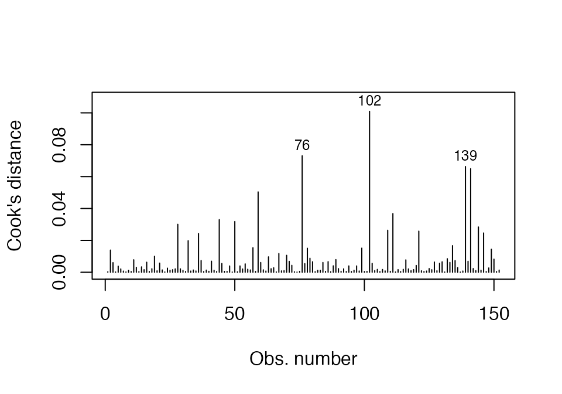

De pad zat aan zijn vijver. Het was een wateroppervlak met geheugen — een vijver die soms iets wist over wie erin keek dat de kijker zelf niet wist.
Sommige dieren bleven staan en tuurden naar zichzelf in het water. Andere liepen door zonder een blik over hun schouder. Het ene dier checkte zijn snorharen alsof er een afspraak op het spel stond. Het andere had het te druk met de geur van de wind, of was te ontspannen om zich druk te maken om zijn eigen kop.
“Twee mogelijkheden per dier,” dacht de pad. “Wel turen, of niet turen. Geen tussenstand.”
Hij vroeg zich af of er iets te voorspellen viel. Misschien dat dieren die net een afwijzing hadden gehad het water opzochten om te checken of er iets aan ze mankeerde. Misschien dat oudere dieren juist minder zelf-bekijkers waren — minder uit te zoeken, of minder bereid het uit te zoeken.
Eén ding wist hij zeker: een gewone rechte regressielijn ging hem niet helpen. Zijn uitkomst was geen continue maat — geen hoeveel, alleen wel of niet. Hij had een ander gereedschap nodig.
De techniek heet logistic regressionLRA — en in dit hoofdstuk gaan we hem stap voor stap opbouwen, te beginnen met de allereenvoudigste vraag: als ik niets over een dier weet, hoe goed kan ik dan al gokken of hij tuurt?
4.0 Project- en datavoorbereiding
Aantekeningen netjes, paden kloppen
Open de meegestuurde projectmap (04_logistische_regressie/) en dubbelklik op 04_logistische_regressie.Rproj. Daarmee staat je werkomgeving klaar: paden kloppen, RStudio kent de juiste werkmap. De data ligt al in data/, de helper-functies in functions/. Niets te installeren als de twee pakketten (car, tidyverse) op je computer staan; anders één keer:
Per dier vier waarden: bekeek_zichzelf (0 = nee, 1 = ja), leeftijd (jaren), aantal_afwijzingen (recente sociale flops) en diersoort (ree/vos/das). De drie voorspellers vormen samen het kandidaat-model.
NoteCategorische voorspellers met meer dan twee niveaus
diersoort is een factor met drie niveaus (ree, vos, das). Wat doet R daarmee in glm()?
R maakt automatisch k − 1dummy-variabelen (treatment-coding): voor \(K\) niveaus krijg je \(K - 1\) dummies, één per niet-referentieniveau.
De referentiecategorie is het eerste level van de factor (hier: ree). R gebruikt levels(factor)[1] als referentie. Bij factor() zonder expliciet levels=-argument is dat alfabetisch eerste; in onze data wordt de level-volgorde expliciet gezet (ree, vos, das). Wijzigen kan via pad_spiegel$diersoort <- relevel(pad_spiegel$diersoort, ref = "vos").
In summary() zie je per niet-referentieniveau één coëfficiënt + Wald-toets — dat is een vergelijking met de referentie, niet een toets op het niveau zelf.
Eén OR per dummy = factor waarmee de odds vermenigvuldigen vergeleken met de referentie.
Voor de vraag “is de factor als geheel voorspellend?” gebruik je anova(model_zonder, model_met, test = "Chisq") (LR-toets) of car::Anova(model, type = "II", test.statistic = "LR"). Dat bundelt alle dummies in één \(\chi^2\)-toets met \(df = K - 1\).
Mini-oefening. Verander de referentiecategorie van diersoort naar vos (pad_spiegel$diersoort <- relevel(pad_spiegel$diersoort, ref = "vos")) en fit het model opnieuw — om te zien hoe Wald-toetsen veranderen ten opzichte van de huidige ree-referentie. Hoe verandert de OR voor ree? En voor das? Wat blijft hetzelfde aan de output van car::Anova(., test = "LR")? Inzicht: dummies + Wald-toetsen veranderen, de LR-toets op de hele factor niet — die is referentie-onafhankelijk.
4.1 De pad telt — eerst met één voorspeller
Van een eenvoudige gok naar een model dat luistert naar één gegeven
“Ik begin klein,” zei de pad. “Eerst tel ik alleen wat ik zie. Dan voeg ik één ding toe. Daarna kijk ik of het beter wordt.”
In deze vijf mini-secties (4.1.a t/m 4.1.e) bouwen we het allereenvoudigste logistische model — één voorspeller, niets anders — en oefenen we kans → odds → odds ratio. Géén log-odds, géén Wald-toets, géén likelihood-ratio nog. Eerst de drie rekenstappen. De rest volgt in 4.1.f en verder.
4.1.a Null-model — hoe goed gokt de pad zonder verdere info?
De pad heeft \(152\) dieren in zijn boekje. Voordat hij naar voorspellers kijkt, vraagt hij: als ik niets weet over een specifiek dier, wat is dan mijn beste gok?
c) Omdat niet-tuurt iets vaker voorkomt dan tuurt (\(79\) versus \(73\)), is de beste gok zonder verdere info “tuurt niet”. Hij heeft dan kans \(79/152 \approx .52\) om goed te zitten. (Anders zou hij omgekeerd \(73/152 \approx .48\) goed zitten — niet veel verschil, hier is het null-model bijna een muntje gooien.)
d) Met de “altijd niet-tuurt”-strategie zit hij ongeveer \(48\) keer per \(100\) dieren fout. Dat is veel — bijna de helft. De vraag is dus: kan hij beter doen als hij iets over de dieren weet?
Inzicht. Dit is het null-model — een model zonder voorspellers. Het voorspelt voor elk dier dezelfde kans, ongeacht wat je verder over het dier weet. Alle volgende modellen vergelijken we hiermee: brengt extra informatie de gok dichter bij de werkelijkheid?
4.1.b Een voorspeller toevoegen — aantal_afwijzingen
De pad heeft een hypothese: misschien turen dieren die net afgewezen zijn vaker in het water — om te checken of er iets aan ze mankeert.
Hij bouwt een logistisch model met één voorspeller: aantal_afwijzingen (interval, aantal recente sociale flops).
Estimate Std. Error z value Pr(>|z|)
(Intercept) -0.5429478 0.3142876 -1.727551 0.08406876
aantal_afwijzingen 0.1812410 0.1050218 1.725747 0.08439298
NoteVraag 4.1.b — Pen-en-papier
a) Lees uit de output de intercept\(b_0\) en de coëfficiënt\(b_1\) voor aantal_afwijzingen. Noteer ze op drie decimalen.
b) Wat is het teken van \(b_1\)? Wat zegt dat teken over de relatie tussen aantal afwijzingen en de kans op turen? (Volgens cursus-conventie interpreteren we \(b\) niet direct, alleen het teken — de echte effectgrootte volgt straks via de odds ratio in 4.1.e.)
c) Bedenk in één zin of de hypothese van de pad door dit teken bevestigd of weerlegd wordt.
CautionAntwoord 4.1.b — open na je eigen poging
a)\(b_0 = -0.543\) (intercept), \(b_1 = 0.181\) (helling voor aantal_afwijzingen).
b)\(b_1\) is positief. Een positieve coëfficiënt betekent: hoe meer afwijzingen, hoe hoger de log-odds dat het dier tuurt. En via de monotone link: hoe hoger de log-odds, hoe hoger de kans. Dus: meer afwijzingen → grotere kans dat het dier in het water staart.
c) De hypothese van de pad wordt bevestigd door het teken: afgewezen dieren zoeken vaker hun spiegelbeeld op. Of het effect ook significant van nul afwijkt is een vraag voor straks (4.1.f).
4.1.c Van \(b\) naar kans — de sigmoid-formule
Het teken alleen voorspelt geen concrete kans. Voor “wat is de kans dat een dier met \(5\) afwijzingen tuurt?” heb je de logistische regressie-vergelijking nodig:
Hier is \(e \approx 2.718\) — Eulers getal, zoals \(\pi\) een vaste constante. Op een rekenmachine staat de knop als eˣ of exp; in R is dat exp(). De formule plet de hele reële lijn netjes naar het kansen-interval \((0, 1)\) — daarom mag je hier zonder zorgen optellen of aftrekken in de exponent; het eindproduct blijft tussen \(0\) en \(1\).
TipReken-truc — de gek-ding-vorm
Voor snelheid op je rekenmachine: noem de exponent-uitdrukking even \(E\) (hoofdletter; let op — niet hetzelfde als \(e\), kleine letter):
Eerst reken je \(E\) uit (één keer typen). Dan gek-ding gedeeld door \(1\) plus gek-ding. Klaar.
In R kun je het ook automatisch via predict():
# Bereken kansen voor een paar X-waarden via R:nieuw <-data.frame(aantal_afwijzingen =c(0, 2, 3, 5))nieuw$P_tuurt <-predict(m_afw, newdata = nieuw, type ="response")round(nieuw, 3)
a) Reken handmatig \(P(\text{tuurt})\) voor een dier met \(\text{aantal\_afwijzingen} = 0\). Toon ook tussenstap \(E\).
b) Idem voor \(\text{aantal\_afwijzingen} = 3\). Wat valt je op aan de uitkomst?
c) Idem voor \(\text{aantal\_afwijzingen} = 5\).
d) Zonder uit te rekenen: bij welke \(X\)-waarde ligt \(P(\text{tuurt})\) precies op \(.5\)? (Hint: gebruik de drempel-truc \(X^* = -b_0/b_1\) uit de mini-callout hieronder.)
TipDe drempel-truc — bij welk \(X\) is \(P = .5\)?
\(P = .5\) correspondeert met odds \(= 1\), en odds \(= 1\) met logit \(= 0\). Dus: zet \(b_0 + b_1 X = 0\), los op naar \(X\):
\[X^* = -\dfrac{b_0}{b_1}\]
Voor ons: \(X^* = -(-0.543)/0.181 = 3.00\). Bij precies \(3\) afwijzingen kantelt het model van “voorspelt niet-tuurt” naar “voorspelt tuurt”.
CautionAntwoord 4.1.c — open na je eigen poging
a)\(E = e^{-0.543 + 0.181 \cdot 0} = e^{-0.543} \approx 0.581\). Dan \(P = 0.581 / (1 + 0.581) \approx 0.367\). Een dier zonder afwijzingen heeft ~\(37\%\) kans om te turen.
b)\(E = e^{-0.543 + 0.181 \cdot 3} = e^{0} = 1\). Dan \(P = 1 / (1 + 1) = 0.50\). Bij precies \(3\) afwijzingen voorspelt het model fifty-fifty. Dat is het kantelpunt.
c)\(E = e^{-0.543 + 0.181 \cdot 5} = e^{0.362} \approx 1.436\). Dan \(P = 1.436 / 2.436 \approx 0.589\). Een dier met \(5\) afwijzingen heeft ~\(59\%\) kans om te turen.
d) Bij \(X^* = -b_0/b_1 = 0.543/0.181 = 3.0\) afwijzingen. Klopt met antwoord (b).
Inzicht. Het model maakt van aantal_afwijzingen een continue kans tussen \(0\) en \(1\). Bij weinig afwijzingen voorspelt het “niet-tuurt”, bij veel afwijzingen “tuurt”, en bij precies \(3\) afwijzingen weet het model het niet — die waarde is de drempel.
4.1.d Odds — een eerste laag ratio
Een odds is een verhouding: hoe vaak verwachten we \(Y = 1\) ten opzichte van \(Y = 0\)? In formule:
a) Reken uit de kansen die je in 4.1.c hebt gevonden de odds voor elk niveau van aantal_afwijzingen (\(0\), \(3\), \(5\)).
b) Bij aantal_afwijzingen = 3 heb je \(P = .50\). Wat zijn de odds dan? Wat valt je op aan dat getal?
c)Snelle weg: bedenk waarom \(\text{odds} = e^{b_0 + b_1 X}\) moet gelden (een \(\exp\) van de log-odds is de odds). Klopt dat met je antwoorden bij (a)?
CautionAntwoord 4.1.d — open na je eigen poging
a) Met de drie kansen \(.367, .500, .589\):
\(X\)
\(P\)
odds = \(P/(1-P)\)
\(0\)
\(.367\)
\(.367/.633 \approx .580\)
\(3\)
\(.500\)
\(.500/.500 = 1.000\)
\(5\)
\(.589\)
\(.589/.411 \approx 1.433\)
b) Bij \(P = .50\) is odds \(= 1\). Even waarschijnlijk wel als niet — fifty-fifty in odds-taal heet één-op-één.
c) Snelle weg via de logit: als \(\log(\text{odds}) = b_0 + b_1 X\), dan \(\text{odds} = e^{b_0 + b_1 X}\). Voor \(X = 0\): \(e^{-0.543} \approx .581\) ✓. Voor \(X = 3\): \(e^{0} = 1\) ✓. Voor \(X = 5\): \(e^{0.362} \approx 1.436\) ✓. Beide routes geven dezelfde odds.
Inzicht. Odds en kans zijn twee manieren om hetzelfde te zeggen. \(P = .5\) ↔︎ odds \(= 1\). \(P > .5\) ↔︎ odds \(> 1\). \(P < .5\) ↔︎ odds \(< 1\). De odds gaan vrijuit van \(0\) tot \(\infty\) — net zo geschikt om mee te rekenen als kansen, vaak juist handiger bij vermenigvuldigen.
4.1.e Odds ratio — een ratio van ratios
Als odds een ratio is binnen één situatie, dan is de odds ratio (OR) een ratio tussen twee situaties — bv. tussen twee waarden van \(X\).
Dat geldt voor elke eenheids-stijging in \(X\) — de OR is constant. Dat is de essentie van logistische regressie: per eenheid \(X\) omhoog, vermenigvuldigen de odds met dezelfde factor.
TipTwee meeuwen — odds ratio (een ratio van ratios)
Naast de zilvermeeuw vliegt een stormmeeuw, die in \(40\%\) van zijn pogingen vis vangt:
Vis gevangen
Niet gevangen
Totaal
Zilvermeeuw
\(70\)
\(30\)
\(100\)
Stormmeeuw
\(40\)
\(60\)
\(100\)
Odds zilvermeeuw \(= 70/30 \approx 2.33\) ← eerste laag ratio
Odds stormmeeuw \(= 40/60 \approx 0.67\) ← eerste laag ratio
Odds ratio\(= 2.33 / 0.67 \approx 3.50\) ← tweede laag ratio
“De zilvermeeuw heeft \(3.5\) keer hogere odds op vis dan de stormmeeuw.” De OR is letterlijk een ratio van ratios — eerst per dier odds, dan die odds op elkaar gedeeld.
TipOR als factor — de drie ankerwoorden
De OR is een factor: een vermenigvuldigingsgetal waarmee je de odds vermenigvuldigt om bij de nieuwe odds te komen, als je \(X\) met één eenheid laat toenemen. Drie woorden, één concept.
Factor — als ik “factor tien” tegen jouw leeftijd gooi, en jij bent \(21\), dan ben je opeens \(210\) jaar. Geen plus tien, geen min tien — keer tien. Zo werkt OR. Lineair gedraagt zich additief; exponentieel gedraagt zich multiplicatief. Plus / min versus keer / door.
Voor onze pad:
# Odds ratio per extra afwijzing — uit het model:OR <-exp(coef(m_afw)["aantal_afwijzingen"])round(OR, 3)
aantal_afwijzingen
1.199
NoteVraag 4.1.e — Pen-en-papier
a) Reken \(\text{OR} = e^{b_1} = e^{0.181}\) handmatig uit (op je rekenmachine eˣ of exp).
b) Interpreteer in één zin: wat zegt deze OR over het effect van één extra afwijzing op de kans dat een dier tuurt?
c) Voor vijf extra afwijzingen: bereken \(\text{OR}(5) = \text{OR}(1)^5\). Wat zijn dan de odds van een dier met \(5\) afwijzingen, ten opzichte van een dier met \(0\) afwijzingen?
d) Vergelijk je antwoord bij (c) met de odds-tabel uit 4.1.d: klopt de berekening?
CautionAntwoord 4.1.e — open na je eigen poging
a)\(\text{OR} = e^{0.181} \approx 1.199\).
b) Per één extra afwijzing worden de odds dat het dier tuurt vermenigvuldigd met factor \(1.20\) — een toename van ongeveer \(20\%\) in de odds. (Niet in de kans direct! De kans schaalt niet-lineair met de odds.)
c)\(\text{OR}(5) = 1.199^5 \approx 2.473\). De odds van een dier met \(5\) afwijzingen zijn ongeveer \(2.5\) keer zo groot als de odds van een dier met \(0\) afwijzingen.
Inzicht. De OR is constant over \(X\) — dezelfde factor \(1.20\) geldt of je van \(0\) naar \(1\) gaat, of van \(10\) naar \(11\). Op odds-schaal is logistische regressie lineair-in-de-vermenigvuldiging. Dat is wat \(e^{b_1}\) in essentie zegt.
Tot hier: drie rekenstappen — kans → odds → odds ratio — met één voorspeller. Hierna komen toets-vragen: wijkt \(b_1\) van nul af in de populatie? (Wald-toets, 4.1.f) en doet het model als geheel iets? (LR-toets, 4.1.g). En daarna pas een uitbreiding naar meerdere voorspellers tegelijk.
4.1.f Wald-toets — wijkt \(b_1\) in de populatie af van nul?
We hebben in de steekproef \(b_1 = 0.181\) gevonden. Maar dat is een schatting. De vraag is: kunnen we ook in de populatie zeggen dat afwijzingen iets te maken hebben met turen? Daarvoor toetsen we de populatie-coëfficiënt\(\beta_1\) tegen nul.
Important\(H_0\) en \(H_1\) — populatie-taal, geen significantie
De hypothesen gaan over de populatie, niet over je steekproef en niet over een \(p\)-waarde:
\(H_0: \beta_1 = 0\) — in de populatie heeft aantal_afwijzingen geen effect op de log-odds van turen.
\(H_1: \beta_1 \neq 0\) — in de populatie is er wel een effect.
“De \(H_0\) is dat het niet significant is” — die zin klopt nooit. Significantie is een eigenschap van de toetsuitkomst, niet van de coëfficiënt of van de hypothese.
De Wald-toets vergelijkt de steekproef-coëfficiënt \(b_1\) met zijn standaardfout \(SE_{b_1}\). Twee gedaanten, mathematisch identiek:
R’s summary() geeft \(z\) (geen \(df\)). In Leiden-rapportage staat meestal \(\chi^2(1)\). Beide verwijzen naar dezelfde toets — de ene is het kwadraat van de andere — dezelfde \(p\)-waarde.
# Coëfficiënten met SE en z-waarde:round(summary(m_afw)$coefficients, 3)
Estimate Std. Error z value Pr(>|z|)
(Intercept) -0.543 0.314 -1.728 0.084
aantal_afwijzingen 0.181 0.105 1.726 0.084
NoteVraag 4.1.f — Pen-en-papier
Met \(b_1 = 0.181\) en \(SE_{b_1} = 0.105\):
a) Bereken Wald-\(z\) handmatig.
b) Bereken \(\chi^2(1) = z^2\).
c) De \(p\)-waarde uit de output is \(.084\). Verwerp je \(H_0\) op \(\alpha = .05\)?
d) Welke conclusie trek je over de populatie? Formuleer in één zin volgens de regels uit de \(H_0/H_1\)-callout hierboven.
e) De pad’s hypothese was dat afgewezen dieren vaker turen. Heeft de Wald-toets die hypothese ondersteund?
CautionAntwoord 4.1.f — open na je eigen poging
a)\(z = 0.181 / 0.105 \approx 1.72\). (Klein-positief — wijst dezelfde kant op als \(b_1\), maar niet zwaar.)
b)\(\chi^2(1) = 1.72^2 \approx 2.97\). (Mathematisch identiek aan de \(z\)-toets — zelfde toets, andere vorm.)
c)\(p = .084 > .05\). We verwerpen \(H_0\) niet. Op \(\alpha = .05\) kunnen we niet concluderen dat \(\beta_1 \neq 0\) in de populatie.
d)In de huidige steekproef (\(N = 152\)) is het effect van aantal_afwijzingen op de log-odds van turen niet groot genoeg om met voldoende zekerheid te zeggen dat \(\beta_1\) in de populatie van nul afwijkt. Korter, niet-significant betekent niet “geen effect” — het betekent “niet genoeg signaal in deze data om te concluderen dat het effect bestaat”.
e) Strikt genomen: de Wald-toets geeft onvoldoende bewijs om de hypothese te ondersteunen. Maar het teken van \(b_1\) is wel positief, en de \(p\)-waarde zit dichtbij \(.05\) — er zit iets in de data dat de hypothese-richting wijst. Mogelijk dat het effect wel significant wordt als we andere voorspellers toevoegen (zie 4.A — daar komt aantal_afwijzingen als deel van een groter model wel uit met \(p = .032\)). Een voorspeller alleen vertelt zelden het hele verhaal.
Inzicht. De Wald-toets (\(z\) of \(\chi^2(1)\)) zegt iets over één specifieke coëfficiënt in het model dat je nu hebt gefit. Bij een enkel-voorspeller-model zit veel ruis nog in de residuen — het model verklaart maar een klein stukje. Vanaf 4.A breiden we uit met leeftijd en diersoort, en dan komt het beeld scherper.
4.1.g Likelihood-ratio-toets — doet het model als geheel iets?
De Wald-toets kijkt per coëfficiënt. De likelihood-ratio-toets (LR) kijkt naar het model als geheel: brengt onze voorspeller aantal_afwijzingen de voorspellingen dichter bij de echte data dan een model zonder voorspellers (het null-model)?
TipVerhaalfiguur — drie steden, drie modellen, één lijn
Stel je drie steden voor op een rechte lijn: Leiden, Voorhout, Haarlem. En ergens voorbij Haarlem ligt de data — de werkelijkheid.
Stad
Model
Wat het doet
Leiden
\(M_0\) — null-model
gokt \(P(Y=1)\) als één algemeen gemiddelde. Geen voorspellers.
Voorhout
\(M_1\) — model met één voorspeller
bv. alleen aantal_afwijzingen. Iets dichter bij data.
Haarlem
\(M_{\text{vol}}\) — volledig model
alle voorspellers (komt straks in 4.A). Het dichtst bij data.
De deviance (\(-2LL\)) is de afstand van dat model tot de data. Hoe groter, hoe verder weg. Het null-model in Leiden ligt het verst. Voeg een goede voorspeller toe, en je schuift op naar Voorhout. Een volledig model brengt je naar Haarlem.
De LR-toets vraagt: hoeveel kilometer zijn we opgeschoten door deze voorspeller toe te voegen — en is dat opvallend meer dan we van een willekeurige uitbreiding zouden verwachten?
Concreet voor onze pad:
# Null-model — alleen intercept (= Leiden):m_nul <-glm(bekeek_zichzelf ~1,data = pad_spiegel,family =binomial(link ="logit"))# LR-toets: model met aantal_afwijzingen versus model zonder:anova(m_nul, m_afw, test ="Chisq")
WarningLeiden-conventie — deviance, \(-2LL\), residual deviance: drie namen voor één ding
In college-sheets, R-output en handboeken kom je drie verschillende termen tegen die naar hetzelfde getal verwijzen:
Hoe genoemd
Waar je het ziet
\(-2LL\) (of \(-2\log L\))
Lecture-sheets, formules
Deviance
College-tabellen, papers
Residual deviance
R-output van summary(glm(...))
Hoe kleiner, hoe dichter bij de data. Voor onze pad:
Null deviance: 210.48 on 151 degrees of freedom
Residual deviance: 207.40 on 150 degrees of freedom
\(\chi^2_{LR} = 210.48 - 207.40 = 3.08\) — de afstand-verbetering van Leiden naar Voorhout.
NoteVraag 4.1.g — Pen-en-papier
a) Lees uit de R-output (of de Leiden-conventie-callout hierboven) de twee deviances: null en residual.
b) Bereken \(\chi^2_{LR} = \text{Dev}_{\text{null}} - \text{Dev}_{\text{model}}\) handmatig.
c) Hoeveel vrijheidsgraden heeft de LR-toets hier? (Hint: $df = $ aantal toegevoegde voorspellers.)
d) Uit de R-output is \(p \approx .079\). Verwerp je \(H_0\) op \(\alpha = .05\)?
e) Vergelijk je \(\chi^2_{LR}\) met de Wald-\(\chi^2(1) \approx 2.97\) uit 4.1.f. Geven beide toetsen dezelfde conclusie? Wat valt je op aan het kleine verschil in getallen?
CautionAntwoord 4.1.g — open na je eigen poging
a) Null deviance \(= 210.48\); residual deviance van het model met aantal_afwijzingen\(= 207.40\).
b)\(\chi^2_{LR} = 210.48 - 207.40 = 3.08\) — let op: gebruik onafgeronde getallen anders klopt de aftrekking niet (zie sudoku-eigenschap, behandeld in 4.A).
c)\(df = 1\) — we voegen één voorspeller toe (aantal_afwijzingen).
d)\(p \approx .079 > .05\). We verwerpen \(H_0\) niet. De LR-toets ondersteunt op \(\alpha = .05\) niet de hypothese dat het model significant beter is dan het null-model.
e) Beide toetsen geven \(p \approx .08\) — dezelfde conclusie (niet-significant). Wald-\(\chi^2(1) = 2.97\) versus LR-\(\chi^2(1) = 3.08\) verschillen marginaal. Bij grote \(N\) en simpele modellen geven Wald en LR vrijwel dezelfde uitkomst. Het kleine verschil komt doordat ze via andere formules tot een toets-statistiek komen — Wald via \(b/SE\), LR via deviance-aftrekken. In ons geval levert dat een paar honderdsten verschil op. Verwaarloosbaar voor de conclusie.
Inzicht. Wald en LR doen op model-niveau vrijwel hetzelfde werk. Het verschil wordt merkbaar bij (1) factoren met meerdere niveaus — daar bundelt LR alle dummies in één toets, terwijl Wald per dummy een aparte toets levert; en (2) kleine samples of grote effecten — daar kan Wald paradoxaal underpowered raken (Hauck-Donner-effect). Vuistregel: bij twijfel, en altijd voor factoren als geheel, LR.
We hebben nu de vijf rekenstappen (kans → odds → OR) én de twee toetsen (Wald, LR) op één voorspeller doorlopen. Het effect van aantal_afwijzingen alleen blijkt marginaal niet-significant (\(p \approx .08\)). Dat is niet “geen effect” — dat is “in deze data niet sterk genoeg om met zekerheid te concluderen, gegeven alleen deze ene voorspeller”. In 4.A breidt het model zich uit naar leeftijd en diersoort — en daar komt het beeld scherper uit.
4.A Uitbreiding — het volle model met meerdere voorspellers tegelijk
Tellen wat voorbij komt — en wat voorbij gaat
“Eén bit per dier,” zei de pad. “Maar als ik weet bij welke combinatie het spiegelen wél gebeurt, weet ik morgen wie er nieuwsgierig naar zijn eigen smoeltje zal zijn.”
NoteVoor je gaat rekenen — vijf vragen aan jezelf
Het stappenplan, opnieuw, met de techniek-keuze als laatste stap.
Wie of wat wordt er gemeten?De pad heeft \(152\) dieren genoteerd.
Wat wordt er gemeten?Vier variabelen per dier: bekeek_zichzelf, leeftijd, aantal_afwijzingen, diersoort.
Onafhankelijk of afhankelijk?Onderzoeksvraag: voorspellen leeftijd, aantal afwijzingen en diersoort of een dier zichzelf bekijkt? Dan is bekeek_zichzelf afhankelijk (\(Y\)), de andere drie onafhankelijk (\(X\)).
Meetniveau van elke variabele?bekeek_zichzelf binair, leeftijd interval, aantal_afwijzingen interval, diersoort nominaal (3 niveaus).
Welke techniek? Doorloop de beslisboom:
flowchart TD
A[Hoeveel afhankelijke<br/>variabelen?] -->|één| B[Y meetniveau?]
A -->|meerdere| Z[MANOVA<br/><i>thema 5</i>]
B -->|interval| C[X-en meetniveau?]
B -->|binair| D[Logistic regression<br/><i>dit thema</i>]
C -->|alleen interval| E[Multiple regression<br/><i>thema 1</i>]
C -->|alleen nominaal| F[ANOVA<br/><i>thema 2</i>]
C -->|gemengd| G[ANCOVA<br/><i>thema 3</i>]
style D fill:#faf3e2,stroke:#c9a05a,stroke-width:2px
NoteBens pijltjes-overzicht — alle MVDA-technieken in één tabel
Dezelfde keuze, anders genoteerd. Lees als predictor(en) (meetniveau) → DV(s) (meetniveau):
#
Predictor(en)
DV(s)
Techniek
dich |X|
|Y| int
\(t\)-toets
nom 3+lvl |X|
|Y| int
éénweg ANOVA
1
int |X X …|
|Y| int
MRA — thema 1
2
nom |X X|
|Y| int
factorial ANOVA — thema 2
3
nom + int |X C|
|Y| int
ANCOVA — thema 3
4
bo(in) |X|
|Y| bin
LRA — thema 4
5
nom |X|
|Y₁ Y₂ …| int
MANOVA — thema 5
6
within-subject momenten
|Y₁ Y₂ Y₃ Y₄| int
RMA — thema 6
7
indirect via \(M\)
\(X \to M \to Y\) pad
Mediation — thema 7
\(Y\) is binair (bekeek_zichzelf), \(X\)-en zijn gemengd. Meetniveau van \(X\) doet er minder toe — wat de techniek bepaalt is de aard van \(Y\). Antwoord: logistic regression.
T1 — Techniek-keuze: LRA, MRA, ANOVA of ANCOVA?
NoteVraag T1 — Pen-en-papier
Voor elk vignet: bepaal afhankelijke variabele, meetniveau van elke voorspeller, en kies dan de techniek.
a)Een vleermuis registreert per nachtelijke vlucht of hij prooi heeft gevangen (ja/nee), met de continue voorspellers maan-helderheid en jachtduur.
b)Een psycholoog meet bij \(100\) studenten hun studie-uren-per-week als functie van slaapkwaliteit en zelf-gerapporteerde motivatie — beide continu.
c)Een sportcoach vergelijkt drie trainingsregimes (traag opbouwend / interval / krachtgericht) op rondetijd (\(s\)). Bij \(60\) lopers.
d)Een kerkuil meet per nest of een kuiken het overleeft (ja/nee), met als voorspellers nesthabitat (drie typen) en gewicht-bij-uitkomst (continu).
CautionAntwoord T1 — open na je eigen poging
a)\(Y\) = prooi-gevangen (BIN), twee continue \(X\)-en. \(\Rightarrow\)LRA.
d)\(Y\) = overleeft (BIN), één factor (nesthabitat) + één continue covariaat (gewicht). \(\Rightarrow\)LRA. Niet ANCOVA: ANCOVA vereist een continue \(Y\). Bij binaire \(Y\) wordt het altijd LRA, ongeacht de mix van \(X\)-meetniveaus.
Vuistregel. Het meetniveau van \(Y\) bepaalt de techniek-familie. Binaire \(Y\)\(\Rightarrow\) LRA. Continu \(Y\) + alleen continue \(X\)\(\Rightarrow\) MRA. Continu \(Y\) + alleen factor(en) \(\Rightarrow\) ANOVA. Continu \(Y\) + factor + covariaat \(\Rightarrow\) ANCOVA.
T2 — Odds versus probability
NoteVraag T2 — Pen-en-papier
Odds en kansen zijn twee manieren om hetzelfde feit te beschrijven, maar op verschillende schalen.
a) Bij \(p = 0.50\): wat is de odds? En de log-odds (logit)?
b) Bij \(p = 0.80\): wat is de odds? En de log-odds?
c) Stel je leest af dat de odds van slagen voor een tentamen \(= 3\). Wat is de bijbehorende kans \(p\)?
d) Bij negatieve log-odds is de kans… groter of kleiner dan \(.50\)?
d) Kleiner dan \(.50\). Bij \(\text{logit}(p) < 0\) geldt \(p < 0.50\); bij \(\text{logit}(p) > 0\) geldt \(p > 0.50\); bij \(\text{logit}(p) = 0\) geldt \(p = 0.50\). De logit “centreert” \(p = 0.5\) op \(0\) en strekt \([0,1]\) uit naar \(\mathbb{R}\).
Inzicht. Een lineair model leeft op \(\mathbb{R}\). Probabilities (\([0,1]\)) niet. De logit-link is de brug.
4.A.a Verkenning — frequenties en wolken
Voordat de pad fit, kijkt hij eerst.
Algemene vorm.
table(mijn_data$Y)prop.table(table(mijn_data$Y))table(mijn_data$factor, mijn_data$Y)# Continue X tegenover Y — boxplot per uitkomst-categorie.boxplot(X1 ~ Y, data = mijn_data)
Voor onze dieren.
# Aantallen per uitkomst en proportie zelf-bekijkers.table(pad_spiegel$bekeek_zichzelf)
0 1
79 73
prop.table(table(pad_spiegel$bekeek_zichzelf))
0 1
0.5197368 0.4802632
# Kruistabel diersoort x bekeek_zichzelf.table(pad_spiegel$diersoort, pad_spiegel$bekeek_zichzelf)
a) Hoeveel dieren heeft de pad genoteerd? Welke proportie bekeek zichzelf?
b) Hoe verschilt de mediane leeftijd tussen “wel bekeken” en “niet bekeken”? In welke richting?
c) Idem voor aantal afwijzingen.
d) Lijkt diersoort uit te maken? Welke richting?
CautionAntwoord 4.A — open na je eigen poging
In gewone woorden.
\(N = 152\), waarvan \(73\) zelf-bekijkers (\(48.0\%\)) en \(79\) niet-bekijkers (\(52.0\%\)) — vrijwel balanced (\(n_{\max}/n_{\min} = 79/73 \approx 1.08\)).
Op de boxplot ligt de mediane leeftijd bij bekijkers lager dan bij niet-bekijkers — jonger geeft meer spiegel-gedrag.
De afwijzingen-boxplot wijst de andere kant op: bij bekijkers liggen de aantallen afwijzingen iets hoger — wie afgewezen wordt, zoekt het water op om eens goed te kijken wie er voor schut staat.
De kruistabel laat zien dat vossen relatief vaak in de “wel bekeken”-cel zitten (\(46\) van \(55\) vossen), dassen bijna nooit (\(3\) van \(33\)), reeën wisselend (\(24\) van \(64\)). Vossen zijn de narcisten van het bos.
APA-stijl.
Van \(N = 152\) dieren bekeken \(73\) (\(48.0\%\)) zichzelf in het water. Beschrijvend lag de mediane leeftijd bij bekijkers lager dan bij niet-bekijkers, lag het aantal afwijzingen bij bekijkers iets hoger, en kwam zelfreflectie veel vaker voor bij vossen dan bij dassen.
4.A.b Het volle model fitten — alle voorspellers tegelijk
De familie binomial(link = "logit") zegt: “\(Y\) is binair, en model dit op de log-odds-schaal.” glm() gebruikt maximum likelihood in plaats van OLS, wat de Wald-\(z\)-toetsen oplevert in plaats van \(t\)-toetsen.
ImportantWald-\(z\) in summary() versus Wald-\(\chi^2(1)\) in rapportage
summary() toont per coëfficiënt de Wald-\(z\): \[z_j = \dfrac{b_j}{SE_{b_j}}\]
Maar in rapportage (zoals op tentamen en in APA-stijl-papers volgens Leiden-conventie) staat meestal de Wald-\(\chi^2(1)\) — dezelfde toets, andere vorm:
\[\chi^2(1)_j = z_j^2\]
Mathematisch identiek. Een \(z = 2.5\) wordt \(\chi^2(1) = 6.25\) — exact dezelfde \(p\)-waarde. De ene is gewoon het kwadraat van de andere. De \(df = 1\) omdat we één coëfficiënt toetsen.
Lees-conventie:
Uit summary() lees je z value en Pr(>|z|).
In rapportage schrijf je \(\chi^2(1) = \ldots\), \(p = \ldots\) — kwadrateer de \(z\).
Call:
glm(formula = bekeek_zichzelf ~ leeftijd + aantal_afwijzingen +
diersoort, family = binomial(link = "logit"), data = pad_spiegel)
Coefficients:
Estimate Std. Error z value Pr(>|z|)
(Intercept) -0.43231 0.58160 -0.743 0.4573
leeftijd -0.14707 0.06703 -2.194 0.0282 *
aantal_afwijzingen 0.29008 0.13499 2.149 0.0316 *
diersoortvos 2.35041 0.47589 4.939 0.000000785 ***
diersoortdas -1.74150 0.67515 -2.579 0.0099 **
---
Signif. codes: 0 '***' 0.001 '**' 0.01 '*' 0.05 '.' 0.1 ' ' 1
(Dispersion parameter for binomial family taken to be 1)
Null deviance: 210.48 on 151 degrees of freedom
Residual deviance: 144.26 on 147 degrees of freedom
AIC: 154.26
Number of Fisher Scoring iterations: 5
NoteVragen 4.A — volle model (e–g)
e) Welke voorspellers zijn significant volgens de Wald-toets (\(p < .05\))?
f) Wat is de geschatte log-odds-coëfficiënt voor leeftijd? Voor aantal_afwijzingen? Wat zegt het teken (volgens de cursus-conventie interpreteren we \(b\) niet direct, alleen het teken)?
g) Wat doet diersoortvos ten opzichte van diersoortree (de referentie)? En diersoortdas?
CautionAntwoord 4.A — open na je eigen poging
In gewone woorden.
Significant (\(p < .05\)): leeftijd (summary(): \(z = -2.19\), equivalent \(\chi^2(1) = 4.80\), \(p = .028\)), aantal_afwijzingen (\(z = 2.15\) / \(\chi^2(1) = 4.62\), \(p = .032\)), de dummy diersoortvos (\(z = 4.94\) / \(\chi^2(1) = 24.40\), \(p < .001\)) en diersoortdas (\(z = -2.58\) / \(\chi^2(1) = 6.66\), \(p = .010\)). Alle vier de effecten staan vlaggetjes.
Leeftijd \(b = -0.147\) — negatief teken: jonger geeft meer spiegel-gedrag, een puberale narcisten-trek. Aantal_afwijzingen \(b = 0.290\) — positief teken: wie afgewezen wordt, zoekt het water op.
diersoortvos-coëfficiënt \(2.350\) — positief, dus vossen bekijken zichzelf veel vaker dan reeën (de referentie). diersoortdas\(-1.741\) — sterk negatief, dassen tonen weinig zelfreflectie. De pad zag een tweedeling tussen vos en das: vossen, blijkbaar, hebben iets te bewijzen.
APA-stijl (we komen er straks mooier op terug — zie 4.A.g).
Een logistische regressie van zelf-bekijken op leeftijd, aantal afwijzingen en diersoort toonde een negatief leeftijdseffect (\(\chi^2(1) = 4.80\), \(p = .028\)) en een positief afwijzingseffect (\(\chi^2(1) = 4.62\), \(p = .032\)); vossen onderscheidden zich sterk van reeën (\(\chi^2(1) = 24.40\), \(p < .001\)).
T3 — \(\text{OR}\) uit \(b\) via \(\exp()\)
NoteVraag T3 — Pen-en-papier
De odds ratio is \(\text{OR} = \exp(b)\). Reken zelf:
a)\(b = 0\). Wat is \(\text{OR}\)? Interpreteer.
b)\(b = 0.69\). Wat is \(\text{OR}\) (afgerond)? Interpreteer.
c)\(b = -0.69\). Wat is \(\text{OR}\)? Interpreteer.
d) Voor de pad-data: aantal_afwijzingen \(b = 0.290\). Wat is \(\text{OR}\) per afwijzing? Hint: \(\exp(0.290) \approx 1.337\).
CautionAntwoord T3 — open na je eigen poging
a)\(\text{OR} = \exp(0) = 1\). Geen effect: bij één-eenheid stijging in \(X\) blijven de odds gelijk.
b)\(\text{OR} = \exp(0.69) \approx 2.0\). Per één-eenheid stijging in \(X\) verdubbelen de odds.
c)\(\text{OR} = \exp(-0.69) \approx 0.50\). Per één-eenheid stijging halveren de odds. Spiegelbeeld van b.
d)\(\text{OR}_{\text{afw}} = \exp(0.290) \approx 1.337\). Per extra afwijzing worden de odds van zelfreflectie met factor \(1.337\) vermenigvuldigd — een stijging van ruim \(33\%\) per afgewezen vibe.
Inzicht.\(\exp\) vertaalt log-odds (additief) naar odds (multiplicatief). Een coëfficiënt \(b\) van \(0\) wordt \(\text{OR} = 1\); positieve \(b\) geeft \(\text{OR} > 1\); negatieve \(b\) geeft \(\text{OR} < 1\).
De OR voor één-eenheid stijging is \(\text{OR}(1) = \exp(b)\). Voor \(k\)-eenheden stijging: \[\text{OR}(k) = \exp(k \cdot b) = \text{OR}(1)^k\]
Voor de pad-data: \(\text{OR}_{\text{afw}}(1) \approx 1.34\) per afwijzing.
a) Wat is de OR voor een verschil van \(3\) afwijzingen?
b) Wat is de OR voor een verschil van \(5\) afwijzingen?
c) Stel een dier had vorige maand \(0\) afwijzingen, deze maand \(2\) extra. Hoeveel keer hoger zijn de odds van zelfreflectie, alle andere voorspellers gelijk?
d) Voor leeftijd: \(\text{OR}(1) \approx 0.86\) per jaar (negatief teken — jonger geeft meer spiegel-gedrag). Wat is de OR voor \(5\) jaar verschil?
CautionAntwoord T4 — open na je eigen poging
a)\(\text{OR}(3) = 1.34^3 \approx 2.41\). Bij drie afwijzingen meer worden de odds bijna \(2.4\) keer zo groot.
b)\(\text{OR}(5) = 1.34^5 \approx 4.32\). Vijf afwijzingen meer maakt de odds ruim \(4\) keer zo groot — dat lijkt extreem; zo werkt exponentieel rekenen.
c)\(\text{OR}(2) = 1.34^2 \approx 1.80\). De odds zijn bijna verdubbeld na twee extra afwijzingen.
d)\(\text{OR}(5) = 0.86^5 \approx 0.47\). Bij vijf jaar oudere dieren halveren de odds van spiegel-gedrag ongeveer.
Inzicht. Odds rekenen vermenigvuldigend, niet optellend. Per eenheid telt \(b\) op in log-odds, vermenigvuldigt \(\text{OR}\) in odds. Vandaar de exponentiële groei (of krimp) bij meer eenheden.
TipBij welk \(x\) is \(P = .5\)? — de drempel-truc (afleiding in drie stappen)
Een vraag die regelmatig op tentamens terugkomt: “voor welke waarde van \(X\) is de slagings-kans precies 50%?” Dat punt is de natuurlijke drempel van het model — daar slaat het van “voorspelt zakken” naar “voorspelt slagen” om. Komt straks terug in 4.A.f (cutoff voor classificatie).
Voor een model met één voorspeller, \(P(Y=1) = \dfrac{e^{b_0 + b_1 X}}{1 + e^{b_0 + b_1 X}}\), leid je dat punt zo af:
Stap 1.\(P = .5\) correspondeert met odds \(= 1\), en odds \(= 1\) correspondeert met \(\text{logit}(P) = \log(1) = 0\). Dus de logit-vorm wordt: \[b_0 + b_1 X = 0\]
Stap 2. Los op naar \(X\). Sleep \(b_0\) naar de andere kant: \[b_1 X = -b_0\]
Stap 3. Deel beide kanten door \(b_1\): \[\boxed{\,X^* = -\frac{b_0}{b_1}\,}\]
Bv. bij een fictief logistic-regressie-model met \(b_0 = -4.663\) en \(b_1 = 0.707\): \(X^* = -(-4.663)/0.707 = 6.59\). Bij \(X = 6.59\) is \(P(Y=1) = .5\). Voor \(X < 6.59\) voorspelt het model “zakken”, voor \(X > 6.59\) “slagen”.
Voor een model met meerdere voorspellers werkt het ook, maar dan moet je de andere \(X\)’s vastzetten op een waarde naar keuze (bv. hun gemiddelde, of een specifiek profiel). De formule blijft dezelfde structuur: zet logit op nul, los op naar \(X_j\).
4.A.c Odds ratios en hun 95%-CI — meerdere voorspellers naast elkaar
Algemene vorm.
exp(coef(mijn_model)) # Odds ratios per coëfficiëntexp(confint(mijn_model)) # 95%-CI op odds-schaal (profile-likelihood)exp(confint.default(mijn_model)) # 95%-CI op odds-schaal (Wald, sneller)
confint() (profile-likelihood) is theoretisch nauwkeuriger; confint.default() (Wald) is sneller en standaard in veel rapportages. De verschillen zijn klein bij grote \(N\).
Pad — logistische regressie: coëfficiënten en odds ratios
Term
b
SE
Wald z
p
OR
95%-CI
Intercept
−0.43
0.58
−0.74
0.457
0.65
[0.21, 2.03]
Leeftijd (jaren)
−0.15
0.07
−2.19
0.028
0.86
[0.76, 0.98]
Aantal afwijzingen
0.29
0.13
2.15
0.032
1.34
[1.03, 1.74]
Diersoort: vos vs ree
2.35
0.48
4.94
0.000
10.49
[4.13, 26.66]
Diersoort: das vs ree
−1.74
0.68
−2.58
0.010
0.18
[0.05, 0.66]
NoteVragen 4.A — odds ratios (h–j)
h) Wat is de OR voor leeftijd? Voor aantal_afwijzingen? Wat betekent dat in plain Nederlands?
i) Bevatten de 95%-CI’s van leeftijd en aantal_afwijzingen de waarde \(1\)? Wat zegt dat over significantie?
j) Wat is de OR voor diersoort vos versus ree? Wat betekent een OR boven \(1\)?
CautionAntwoord 4.A — open na je eigen poging
In gewone woorden.
\(\text{OR}_{\text{leef}} = 0.86\) — per jaar dat een dier ouder is, worden de odds van zelf-bekijken met factor \(0.86\) vermenigvuldigd, oftewel \(14\%\) lager per jaar. \(\text{OR}_{\text{afw}} = 1.34\) — per extra afwijzing \(34\%\) hogere odds van zelfreflectie.
95%-CI leeftijd \([0.76, 0.98]\) — bevat \(1\) niet, dus significant. CI aantal_afwijzingen \([1.03, 1.74]\) — ook niet \(1\), ook significant. Een CI die \(1\) bevat zou betekenen “geen effect kan niet uitgesloten worden”.
\(\text{OR}_{\text{vos vs ree}} = 10.49\) — vossen hebben odds van zelfreflectie die ruim tien keer hoger liggen dan reeën, mooie sterke zelfbevestigings-energie. Een OR boven \(1\) betekent: deze categorie heeft hogere odds dan de referentie.
APA-stijl.
Per jaar dat een dier ouder is, lagen de odds van zelf-bekijken \(0.86\) keer zo hoog (\(95\%\)-CI \([0.76, 0.98]\)). Per extra afwijzing waren de odds \(1.34\) keer hoger (\([1.03, 1.74]\)). Vergeleken met reeën hadden vossen odds van \(10.49\) (\([4.13, 26.66]\)), terwijl dassen de odds verlaagden tot \(0.18\) (\([0.05, 0.66]\)).
4.A.d Modelvergelijking — likelihood-ratio-toets bij meerdere voorspellers
Hoe ver is dit model van waar de data zijn?
“Hou eens vast,” zei de pad. “Afstanden. Hoe ver is mijn vijver van Leiden? Een eind. Hoe ver is Leiden van Voorhout? Tien kilometer. Hoe ver is Voorhout van Haarlem? Twintig. Drie steden op één lijn. Dat zijn drie modellen.”
TipVerhaalfiguur — drie steden, drie modellen, één lijn
Stel je drie steden voor op een rechte lijn: Leiden, Voorhout, Haarlem. En ergens voorbij Haarlem ligt de data — de werkelijkheid, waar alle dieren met hun ja’s en nee’s zitten.
Stad
Model
Wat het doet
Leiden
\(M_0\) — null-model
gokt \(P(Y=1)\) als het algemene gemiddelde. Geen voorspellers.
Voorhout
\(M_1\) — model met één voorspeller
bv. alleen leeftijd. Meer info, dichter bij data.
Haarlem
\(M_{\text{vol}}\) — volledig model
alle voorspellers. Het dichtst bij data dat we kunnen komen.
De deviance\(-2LL\) van een model is de afstand van dat model tot de data. Hoe groter, hoe verder weg; hoe kleiner, hoe dichterbij. Een null-model zit in Leiden, ver van data. Een vol model zit in Haarlem, een stuk dichterbij.
De likelihood-ratio-toets vraagt: “hoeveel kilometer zijn we opgeschoten door \(X_j\) toe te voegen?” — en of die opschuiving meer is dan we van een willekeurige uitbreiding zouden verwachten. Significant betekent: de stap van Leiden naar Voorhout (of van Voorhout naar Haarlem) is een echte verbetering, geen toevalligheid.
WarningLeiden-conventie — deviance, \(-2LL\), residual deviance: drie namen voor één ding
In college-sheets, R-output en handboeken kom je drie verschillende termen tegen die naar hetzelfde getal verwijzen:
Hoe genoemd
Waar je het ziet
\(-2LL\) (of \(-2\log L\))
Leiden-lecture-sheets, formules in tekst
Deviance
college-tabellen, papers, mondelinge uitleg
Residual deviance
R-output van summary(glm(...)), onder de coëfficiënten-tabel
Drie woorden, één concept: een afstandsmaat voor hoe ver dit model van de data zit (zie ook de Leiden \(\to\) Voorhout \(\to\) Haarlem-metafoor hierboven). Hoe kleiner, hoe dichter bij de data.
Wat R laat zien (knip uit summary(m_pad)):
Null deviance: 200.91 on 151 degrees of freedom
Residual deviance: 134.69 on 147 degrees of freedom
Null deviance = \(-2LL_0\) (afstand van het null-model tot de data)
Residual deviance = \(-2LL_k\) (afstand van het volle model tot de data)
\(\chi^2_{LR}\) = het verschil = \(200.91 - 134.69 = 66.22\) — hoeveel kilometer dichterbij data je bent gekomen door voorspellers toe te voegen
In rapportage: schrijf gewoon deviance (of \(-2LL\) in formule-vorm). Residual deviance is R-jargon, niet APA.
NoteWald versus LR — twee toetsen, één doel
Bij MRA gebruik je \(t\)-toetsen op coëfficiënten en \(F\)-toetsen op (sub)modellen. Bij LRA bestaan beide soorten ook:
Wald-\(z\) per coëfficiënt: vergelijkt \(b_j\) met \(0\) via zijn SE. Snel, direct uit summary().
Likelihood ratiolikelihood ratio tussen twee geneste modellen: \(\chi^2_{LR} = -2LL_{\text{simpel}} - (-2LL_{\text{complex}})\). Theoretisch nauwkeuriger, vooral bij factoren met meerdere niveaus of bij lage \(N\). Bij grote \(N\) geven ze meestal vergelijkbare \(p\)-waardes.
Voor een factor met \(K\) niveaus toetst de LR-toets alle \(K-1\) dummies tegelijk — één\(\chi^2_{LR}\) met \(df = K-1\). Dat lees je niet af uit summary(); daarvoor heb je anova(m_zonder, m_met, test = "Chisq") nodig.
Algemene vorm.
# Volledig model versus null-model — toetst of het model als geheel iets doet.m_null <-glm(Y ~1, data = mijn_data, family =binomial(link ="logit"))anova(m_null, mijn_model, test ="Chisq")# LR-toets per term (model met- vs zonder die term).car::Anova(mijn_model, type ="II", test.statistic ="LR")
Voor onze dieren.
# Null-model (alleen intercept).m_null <-glm(bekeek_zichzelf ~1,data = pad_spiegel,family =binomial(link ="logit"))# LR-toets: doet het volledige model iets, ten opzichte van het null-model?anova(m_null, m_pad, test ="Chisq")
ImportantGeneste modellen — twee voorwaarden voor de LR-toets
Vraag eerst: wanneer is een vogeltje lekker genest?
Als hij er niet doorheen pleurt. Het nestje draagt elk takje waar de vogel op landt. Niet helemaal de juiste vergelijking voor de wiskunde — wel een geheugensteuntje waar je altijd om kunt lachen. Onthou dat: genest = draagvermogen.
De LR-toets vergelijkt twee modellen, \(M_{\text{simpel}}\) en \(M_{\text{complex}}\). Hij werkt alleen als de modellen genest zijn:
Op dezelfde data gefit (zelfde aantal observaties — anders zijn de likelihoods niet vergelijkbaar).
\(M_{\text{simpel}}\) is een deelverzameling van \(M_{\text{complex}}\) qua voorspellers (alle voorspellers in \(M_{\text{simpel}}\) zitten ook in \(M_{\text{complex}}\), plus nog één of meer).
Twee modellen met overlappende-maar-niet-geneste predictoren toets je niet met LR — voor zoiets gebruik je AIC of BIC. Bij anova(m_null, m_pad, test = "Chisq") moet R-output óók kloppen qua \(df\) van het verschil: \(df_{\text{LR}} = k_{\text{complex}} - k_{\text{simpel}}\).
ImportantDeviances onafgerond rapporteren — anders breekt de sudoku
De LR-toetsstatistiek is een verschil tussen twee deviances:
Als je in een tabel of paper de twee deviances afzonderlijk rapporteert én daarnaast de \(\chi^2_{LR}\), dan moet de aftrekking kloppen. Bv. bij onze pad-data:
Dit gaat mis als je rondt voordat je aftrekt. Stel je rondt elk getal naar gehele getallen: \(201 - 135 = 66\), niet \(66.22\). Een lezer die de drie getallen ziet en wil controleren krijgt dan optellingen die er net naast zitten. Voor APA-rapportage in een paper:
Liever: deviances rapporteren op \(2\) decimalen, ook al staat in jouw R-output meer.
Beter nog: deviances alleen rapporteren als ze relevant zijn voor wat je beweert; vaak is alleen \(\chi^2_{LR}(df) = \ldots, p = \ldots\) genoeg.
(Leiden-werkboek-output rondt soms agressief; dan kun je de aftrek niet meer reproduceren. Niet jouw fout, wél een leesmoeilijkheid.)
TipVrijheidsgraden bij LRA
Bij Wald per coëfficiënt en LR-toets per term:
Toets
\(df\)
Wald per coëfficiënt
\(1\) (normaal verdeeld onder \(H_0\))
LR-toets voor één continue voorspeller
\(1\)
LR-toets voor factor met \(K\) niveaus
\(K - 1\)
LR-toets volledig vs null-model
\(k\) (totaal aantal voorspellers in het model)
Hoofdrekenbaar voorbeeld. Drie voorspellers (twee continu, één factor met \(3\) niveaus) leveren in totaal \(1 + 1 + (3-1) = 4\) vrijheidsgraden voor de LR-toets volledig vs null. Voor onze pad: leeftijd (\(1\)) + aantal_afwijzingen (\(1\)) + diersoort (\(2\)) = \(4\) — dat is precies het \(df\) in de anova()-output.
NoteVragen 4.A — modelvergelijking (k–m)
k) Wat is \(\chi^2_{LR}\) voor het volledige model versus null? Met welk \(df\) en welke \(p\)?
l) Is diersoort als geheel significant volgens de LR-toets? Vergelijk met de Wald-toetsen op de losse dummies.
m) Klopt \(df = 4\) met de hoofdreken-formule?
CautionAntwoord 4.A — open na je eigen poging
In gewone woorden.
\(\chi^2_{LR}(4) = 66.22\), \(p < .001\) — het volledige model verklaart de uitkomst significant beter dan het null-model.
Diersoort als geheel is sterk significant: \(\chi^2_{LR}(2) = 58.10\), \(p < .001\). De losse Wald-toetsen wijzen dezelfde kant op (vos \(p < .001\), das \(p = .010\)); bij factoren is de LR-toets toch principieel beter omdat hij beide dummies in één hypothese bundelt — vergelijking blijft referentie-onafhankelijk.
Het volledige model verklaarde de uitkomst significant beter dan het null-model, \(\chi^2_{LR}(4) = 66.22\), \(p < .001\). Bij gecontroleerde toetsing per term waren leeftijd (\(\chi^2_{LR}(1) = 5.03\), \(p = .025\)), aantal afwijzingen (\(\chi^2_{LR}(1) = 5.04\), \(p = .025\)) en diersoort (\(\chi^2_{LR}(2) = 58.10\), \(p < .001\)) elk significant.
T5 — Wald versus LR-toets: wanneer welke?
NoteVraag T5 — Pen-en-papier
De Wald-\(z\)-toets (uit summary()) en de LR-\(\chi^2\)-toets (uit anova()) toetsen vaak hetzelfde, maar niet altijd op dezelfde manier.
a) Bij één continue voorspeller met één coëfficiënt: zijn de twee toetsen exact hetzelfde, of ongeveer hetzelfde?
b) Bij een factor met \(4\) niveaus: hoeveel Wald-\(z\)-waardes zie je in summary()? Hoeveel LR-toetsen?
c) Welke toets is geschikter om “doet deze factor er als geheel toe?” te beantwoorden? Waarom?
d) Sommige bronnen waarschuwen dat de Wald-toets bij kleine \(N\) of grote effecten onbetrouwbaar wordt. Wat is daar aan de hand? (Hint: Hauck-Donner-effect — bij grote \(|b_j|\) wordt de SE opgepompt en zakt \(z\) paradoxaal omlaag.)
CautionAntwoord T5 — open na je eigen poging
a) Ongeveer hetzelfde — beide toetsen \(H_0: b_j = 0\) en zijn asymptotisch equivalent. Bij grote \(N\) en moderate effecten geven ze vrijwel identieke \(p\)-waardes; bij kleine \(N\) of grote \(|b|\) wijken ze uiteen.
b) Bij een factor met \(4\) niveaus: \(3\) dummies in summary(), dus \(3\) Wald-\(z\)’s — elk een afzonderlijke vergelijking met de referentie. Eén LR-toets in Anova(., test = "LR") met \(df = 3\) — de hele factor-bijdrage tegelijk.
c) De LR-toets. De vraag “doet deze factor er toe?” gaat over de hele factor, niet over één specifieke dummy. De Wald per dummy zou je \(3\) aparte toetsen geven, met multiple-testing-issues. De LR-toets bundelt ze in één getoetste hypothese.
d) Hauck-Donner-effect: bij grote \(|b_j|\) schat glm() ook een grote SE, en de ratio \(b/\text{SE}\) kan paradoxaal kleiner worden — een zeer sterk effect kan ineens minder significant lijken volgens Wald dan volgens LR. Vandaar het advies: bij twijfel of bij factoren altijd de LR-toets gebruiken.
Inzicht. Wald is comfortabel (komt direct uit summary()); LR is robuuster (vooral bij factoren). In rapportage van LRA: gebruik Wald voor losse continue voorspellers, LR voor factoren als geheel en voor model-vergelijking.
# Equivalent via deviances:1- (m_pad$deviance / m_pad$null.deviance)
[1] 0.3145922
NoteWat het getal betekent
\(R^2_L = .315\) — ruwweg \(32\%\) “verklaarde deviance”. Vergelijking met MRA-\(R^2\): een MRA-\(R^2 = .32\) is mooi; een LRA-\(R^2_L = .32\) is goed — pseudo-\(R^2\)-waardes zitten van nature lager dan MRA-waardes, dus de schaal verschuift. Deze waarde laat zien dat het model substantieel meer verklaart dan een null-model met alleen het intercept.
De totale null-deviance (\(-2LL_0 = 210.5\)) wordt verdeeld in een verklaard deel (links: \(66.2\)) en een residueel deel (rechts: \(144.3\)). De pseudo-\(R^2\) is de verhouding tussen “verklaard” en “totaal”: \(66.2/210.5 = .315\). Het is geen variantie-decompositie zoals in MRA, maar het idee is analoog — wat heeft het model toegevoegd ten opzichte van niets weten?
T6 — Pseudo-\(R^2\): interpretatie en grenzen
NoteVraag T6 — Pen-en-papier
a) Wat zijn de minimum- en maximumwaarden van Hosmer-Lemeshow pseudo-\(R^2\)?
b) Waarom liggen pseudo-\(R^2\)-waardes typisch lager dan MRA’s \(R^2\)?
c) Een collega rapporteert een logistisch model met \(R^2_L = .12\) en zegt: “matig, maar acceptabel”. Een ander rapporteert MRA met \(R^2 = .12\) en zegt: “matig, maar acceptabel”. Klopt die parallel?
d) Voor welke vergelijking is pseudo-\(R^2\) wel zinvol?
CautionAntwoord T6 — open na je eigen poging
a) Minimum \(0\) (model voegt niets toe), maximum \(1\) (perfect model: residual deviance = 0). In de praktijk haal je zelden boven \(.40\) in sociale wetenschappen.
b) Een continue \(Y\) heeft veel meer informatie per observatie dan een binaire \(Y\) (één bit). Het model kan dus minder van de “ruis” verklaren; de noemer (totale deviance) is relatief groot ten opzichte van wat het model ervan af kan halen.
c) Niet helemaal. MRA-\(R^2 = .12\) is inderdaad matig (vuistregel Cohen: klein \(.02\), matig \(.13\), groot \(.26\)). LRA-\(R^2_L = .12\) is goed — voor LRA ligt de schaal anders. Direct vergelijken kan niet.
d) Twee logistische modellen op dezelfde data, met verschillende voorspeller-sets. Hoger \(R^2_L\) = meer verklaard. Voor cross-data-vergelijking is de absolute waarde minder informatief.
Inzicht. Pseudo-\(R^2\) is een vergelijkings-maat, geen absolute prestatie-maat. Combineer met inhoudelijke effectgroottes (\(\text{OR}\)’s) en classificatie-prestatie.
Sensitivity \(0.73\): van de \(73\) daadwerkelijke bekijkers heeft het model er \(53\) correct herkend (\(73\%\)).
Specificity \(0.84\): van de \(79\) niet-bekijkers er \(66\) correct als niet-bekijker voorspeld (\(84\%\)) — het model is iets beter in “die kijkt zichzelf níet” zeggen dan andersom.
De cutoff van \(0.5\) is een conventie, niet een wet. Als je sensitivity wilt maximaliseren (bv. een dier dat dringend zelfreflectie nodig heeft niet missen), zet je de cutoff lager. Andersom hoger. ROC-curves vergelijken alle cutoffs tegelijk — zie Wat blijft liggen.
APA-stijl.
Op basis van een cutoff van \(\hat{p} \geq 0.50\) classificeerde het model \(119\) van \(152\) dieren correct (accuracy \(= .78\)). Sensitivity \(= .73\), specificity \(= .84\).
T7 — Classificatie-accuratesse + PPV/NPV
NoteVraag T7 — Pen-en-papier
Naast accuracy, sensitivity en specificity zijn ook positive predictive valuePPV en negative predictive valueNPV relevant. Stel je leest:
predicted
observed 0 1
0 60 20
1 15 55
a) Bereken accuracy, sensitivity en specificity.
b) PPV \(= P(Y=1 | \hat{Y}=1)\): van degenen die het model “uit” voorspelt, welk deel komt daadwerkelijk uit? Bereken.
c) NPV \(= P(Y=0 | \hat{Y}=0)\): van degenen die “niet uit” voorspeld worden, welk deel komt inderdaad niet uit? Bereken.
d) Waarom hangt PPV/NPV af van de base rate (proportie uitkomers in de populatie)?
b) PPV = \(55/(20+55) = 0.733\). Van degenen die als “uit” voorspeld zijn, \(73\%\) klopt.
c) NPV = \(60/(60+15) = 0.800\). Van degenen die als “niet uit” voorspeld zijn, \(80\%\) klopt.
d) Sensitivity en specificity zijn eigenschappen van het model — onafhankelijk van hoe vaak \(Y=1\) in de populatie voorkomt. PPV en NPV daarentegen hangen af van de base rate. In een populatie waar \(Y=1\) heel zeldzaam is, zal PPV laag zijn — zelfs een goed model zal veel false positives geven, simpelweg omdat er weinig echte positives zijn om voorspeld te worden. Vandaar dat een test-met-hoge-sensitivity in een lage-prevalentie-context (bv. zeldzame ziekte) toch tot veel valse alarmen kan leiden.
Inzicht. Accuracy alleen kan misleiden bij scheve uitkomstverdelingen. Bij \(90\%\) niet-uitkomers haal je \(90\%\) accuracy door domweg “altijd niet” te voorspellen — useless. Combineer altijd minimaal sensitivity, specificity en base rate in je interpretatie.
4.A.g APA-zin — alles in één
Toon code (illustratief — niet tentamen-stof)
# Een paar getallen rechtstreeks ophalen voor de zin hieronder.chi <-anova(m_null, m_pad, test ="Chisq")[2, "Deviance"]df_full <- m_pad$df.null - m_pad$df.residualp_full <-anova(m_null, m_pad, test ="Chisq")[2, "Pr(>Chi)"]cat("LR overall: chi^2(", df_full, ") = ",round(chi, 2), ", p = ", signif(p_full, 3),", pseudo-R^2 = ", round(1- m_pad$deviance/m_pad$null.deviance, 3),sep ="")
LR overall: chi^2(4) = 66.22, p = 0.000000000000143, pseudo-R^2 = 0.315
TipEen nette APA-rapportage
Een logistische regressie van zelf-bekijken op leeftijd, aantal afwijzingen en diersoort verklaarde de uitkomst significant beter dan een null-model, \(\chi^2_{LR}(4) = 66.22\), \(p < .001\), pseudo-\(R^2_L = .315\). Per jaar dat een dier ouder was, lagen de odds van zelf-bekijken \(0.86\) keer zo hoog (\(95\%\)-CI \([0.76, 0.98]\), \(p = .028\)); per extra afwijzing waren de odds \(1.34\) keer hoger (\([1.03, 1.74]\), \(p = .032\)). Diersoort droeg sterk bij (\(\chi^2_{LR}(2) = 58.10\), \(p < .001\)): vossen hadden odds van \(10.49\) ten opzichte van reeën, dassen slechts \(0.18\). Op basis van een cutoff \(\hat{p} \geq 0.50\) classificeerde het model \(78\%\) van de dieren correct (sensitivity \(= .73\), specificity \(= .84\)).
4.2 Aannamechecks en uitbreidingen
“Lopen mijn voorspellers wel mooi op de log-odds-schaal?”
LRA leunt op een aantal aannames die anders zijn dan bij MRA:
Geen normaliteit van \(Y\) of residuen vereist — \(Y\) is binair, dat kan niet normaal.
Geen homoscedasticiteit vereist — variantie van de residuen is per definitie functie van \(\hat{p}\).
Wel: log-odds-lineariteit — voor continue voorspellers moet de relatie met de logit van \(Y\) lineair zijn.
Wel: geen sterke multicollineariteit — net als bij MRA.
Wel: geen extreme invloed-punten — net als bij MRA, maar de Cook’s-distance-vuistregels werken minder strak.
WarningLeiden-conventie — normaliteit en homoscedasticiteit hoeven NIET (klassieke trick-question)
Op tentamens komt het terug: “Welke aannames moet je checken bij LRA?” en dan staat in de antwoord-opties iets als “normaal verdeelde residuen” en “gelijke varianties tussen groepen”. Dat zijn de afleiders. Wie reflexmatig de MRA- of ANOVA-aannames opdreunt, valt erin.
Waarom werken die aannames hier niet?
\(Y\) is binair. Een binaire variabele is per definitie binomiaal verdeeld, niet normaal. En de variantie van \(Y\) hangt vast aan \(\pi\): \(\text{Var}(Y) = \pi(1 - \pi)\). Een \(\pi = .5\) geeft variantie \(.25\); een \(\pi = .9\) geeft variantie \(.09\). Heteroscedasticiteit is dus geen schending — het is de structuur. Daarom ook geen \(F\)-toets bij LRA, en daarom ook geen Levene of Shapiro-Wilk.
Wat je wél moet checken (vier aannames van Leiden lecture-sheet 35):
Log-odds-lineariteit — continue voorspellers moeten lineair zijn op de logit-schaal (zie 4.2.a).
Onafhankelijke observaties — geen geclusterde data, geen herhaalde metingen op hetzelfde dier.
Voorspellers measured without error — meetfouten in \(X\) vertekenen \(b\).
Geen sterke multicollineariteit — VIF-check, zie 4.2.b.
Plus sample-size (\(N/k \geq 30\), zie 4.2.c) en outlier-invloed (zie 4.2.d).
Tentamen-veiligheid: als je bij een LRA-vraag een aanname-checklist moet opnoemen, bouw hem op uit deze vier, niet uit de MRA-aannames. Wie “normaliteit” of “homoscedasticiteit” in zijn LRA-antwoord opneemt, verliest punten.
4.2.a Log-odds-lineariteit
Algemene vorm.
# Box-Tidwell-achtige check: voeg X * log(X) toe aan het model.# Als de term significant is, is log-odds-lineariteit geschonden.m_check <-glm(Y ~ X1 + X1:log(X1) + ..., data = mijn_data,family =binomial(link ="logit"))summary(m_check)# Of visueel: scatter van de logit-getransformeerde gemiddelde Y# per X-bin tegen X. Lineair? Dan is de aanname OK.
Voor onze dieren.
Toon code (visuele log-odds-check)
# Bin de continue voorspellers en bereken de empirische log-odds per bin.bin_logit_plot <-function(x, y, k =8, xlab =deparse(substitute(x))) { qs <-quantile(x, probs =seq(0, 1, length.out = k +1), na.rm =TRUE)# Maak unieke breaks om bins te garanderen. qs <-unique(qs) bins <-cut(x, breaks = qs, include.lowest =TRUE) agg <-aggregate(y, by =list(bin = bins), FUN = mean)# Bereken bin-midpoint mids <-aggregate(x, by =list(bin = bins), FUN = mean)$x ps <-pmin(pmax(agg$x, 0.01), 0.99) logits <-log(ps / (1- ps))plot(mids, logits,pch =19, col ="#0077BB",xlab = xlab, ylab ="Empirische log-odds",main =paste("Log-odds-lineariteit:", xlab))abline(lm(logits ~ mids), lty =2, col ="#EE7733")}par(mfrow =c(1, 2), mar =c(4, 4, 2.5, 1))bin_logit_plot(pad_spiegel$leeftijd, pad_spiegel$bekeek_zichzelf,k =6, xlab ="Leeftijd")bin_logit_plot(pad_spiegel$aantal_afwijzingen, pad_spiegel$bekeek_zichzelf,k =5, xlab ="Aantal afwijzingen")

Toon code (visuele log-odds-check)
par(mfrow =c(1, 1))
NoteVragen 4.2
a) Lopen de empirische log-odds redelijk lineair met leeftijd?
b) Idem met aantal_afwijzingen — let op het bereik aan de rechterkant.
c) Wat zou je doen als één van de twee duidelijk gekromd is?
CautionAntwoord 4.2 — open na je eigen poging
In gewone woorden.
Voor leeftijd lopen de bin-punten redelijk dalend: jongere dieren hogere log-odds, oudere lagere — een rechte daling past goed.
Voor aantal_afwijzingen iets meer wisselvallig — bij hoge afwijzings-bins is de schatting onstabiel doordat er minder dieren zijn, maar de gemiddelde trend is nog stijgend.
Bij duidelijke kromming: opties zijn (1) een kwadratische term toevoegen (I(X^2)); (2) categoriseren in groepen; (3) een niet-lineaire link gebruiken (cubic spline, GAM). Categoriseren is laagdrempelig maar verliest informatie; spline/GAM houdt continuïteit (zie Wat blijft liggen).
APA-stijl.
Visuele inspectie van empirische log-odds tegen de continue voorspellers ondersteunde de aanname van log-odds-lineariteit; afwijkingen waren beperkt tot bins met weinig dieren.
e) Voor de factor diersoort print vif() een GVIF met aanvullende kolommen — wat is dat?
CautionAntwoord 4.2 — open na je eigen poging
In gewone woorden.
Alle VIF/GVIF’s onder \(1.10\) — geen multicollineariteit-zorg.
Bij een factor met meerdere niveaus print vif() de generalized VIFGVIF en de aangepaste \(\text{GVIF}^{1/(2 \cdot df)}\) — die laatste is direct vergelijkbaar met de gewone VIF voor continue voorspellers (vuistregel: \(> \sqrt{5} \approx 2.24\) als zorg-drempel). Hier zijn alle waarden ruim onder die drempel.
APA-stijl.
Multicollineariteit was geen zorg: alle VIF/GVIF-waardes lagen onder \(1.10\).
4.2.c Sample-size — Pedhazur’s \(N/k \geq 30\)
N_obs <-nrow(pad_spiegel)k_terms <-length(coef(m_pad)) -1# exclusief interceptratio <- N_obs / k_termsround(c(N = N_obs, k = k_terms, ratio = ratio), 2)
N k ratio
152 4 38
TipPedhazur’s drempel — strenger dan MRA
Bij MRA hanteren we vaak \(N/k \geq 20\) als sample-size-vuistregel. Voor LRA is de aanbeveling strenger: \(N/k \geq 30\) (Pedhazur, 1997). Reden: een binaire \(Y\) bevat minder informatie per observatie dan een continue \(Y\). Een alternatieve regel is events per voorspeller (EPV \(\geq 10\), Hosmer-Lemeshow): tel alleen het zeldzaamste van \(\{Y=0, Y=1\}\) als “events”.
Voor onze pad: \(N/k = 152/4 = 38\) — boven Pedhazur’s drempel. Aantal events: \(\min(73, 79) = 73\), EPV \(= 73/4 = 18.25\) — boven Hosmer-Lemeshow’s drempel. Beide oké.
4.2.d Outliers en invloed — cooks.distance()
plot(m_pad, which =4, sub.caption ="",caption ="Cook's distance per observatie")

NoteVragen 4.2
f) Welke observaties springen er qua Cook’s distance uit?
g) Wat is de gangbare aanpak bij borderline invloed-punten?
CautionAntwoord 4.2 — open na je eigen poging
In gewone woorden.
Een paar punten met Cook’s distance rond \(0.06\)-\(0.08\) — geen waarde boven \(0.5\) of \(1\), geen acuut probleem. Vuistregel voor LRA Cook’s distance is wat losser dan voor MRA omdat de schaal anders ligt.
Bij borderline punten: rapporteer dat je ze hebt opgemerkt, draai het model met-en-zonder, vermeld of conclusies veranderen. Niet stilletjes weglaten.
APA-stijl.
Diagnostiek (Cook’s distance) liet geen extreme invloed-punten zien; alle waarden lagen ruim onder \(0.5\).
T8 — Log-odds-lineariteit: wat is het, hoe checken?
NoteVraag T8 — Pen-en-papier
a) Wat zegt de aanname van log-odds-lineariteit precies? Voor welk type voorspeller geldt hij?
b) Welke twee methoden om hem te checken kennen we uit dit hoofdstuk?
c) Stel je vindt dat een continue voorspeller \(X\) niet-lineair samenhangt met de log-odds — een U-vormige relatie. Welke aanpassing aan het model zou dat oplossen?
CautionAntwoord T8 — open na je eigen poging
a) De relatie tussen elke continue voorspeller \(X_j\) en de logit van \(Y\) moet lineair zijn: \(\text{logit}(P(Y=1)) = b_0 + b_j X_j + \ldots\). Voor factoren geldt de aanname niet — dummies coderen automatisch elk niveau apart, dus geen lineariteit nodig. Alleen continue voorspellers.
b) (1) Visueel: bin \(X\), bereken empirische logit per bin, plot tegen \(X\), kijk naar lineariteit. (2) Box-Tidwell-achtig: voeg \(X \cdot \log(X)\) toe aan het model, kijk of de term significant is. Significantie = afwijking.
c) Voeg een kwadratische term toe: \(\text{logit}(P) = b_0 + b_1 X + b_2 X^2 + \ldots\) Of categoriseer \(X\) in groepen. Of gebruik een spline/GAM (zie Wat blijft liggen).
Inzicht. De aanname is niet “Y hangt lineair samen met X” — dat zou onmogelijk zijn voor binaire Y. Het is “log-odds van Y hangen lineair samen met X”. Op de probability-schaal is de relatie een S-curve (de logistische curve), niet een rechte lijn.
T9 — \(N/k \geq 30\): vergelijken met MRA
NoteVraag T9 — Pen-en-papier
a) Bij MRA hanteert het werkboek \(N/k \geq 20\); bij LRA \(N/k \geq 30\). Waarom is de LRA-drempel strenger?
b) Een onderzoeker heeft \(N = 80\) en wil \(4\) voorspellers in een logistisch model stoppen. \(N/k = 20\). Voldoet dit aan Pedhazur’s vuistregel?
c) Stel het bestand telt \(80\) observaties, waarvan slechts \(12\) events (\(Y=1\)). Wat zegt de EPV-vuistregel?
d) Wat is een gangbare oplossing als je sample-size te klein is voor de gewenste voorspeller-set?
CautionAntwoord T9 — open na je eigen poging
a) Een binaire \(Y\) bevat per observatie maar één bit informatie. Een continue \(Y\) veel meer (zo veel bits als de meetschaal toelaat). De maximum-likelihood-schatter heeft dus meer observaties nodig om dezelfde precisie te bereiken voor logistische coëfficiënten als OLS voor MRA-coëfficiënten.
b) Nee — Pedhazur’s drempel is \(30\) per voorspeller, hier zou je \(N \geq 120\) willen hebben voor \(4\) voorspellers.
c) EPV \(= 12/4 = 3\) — ver onder Hosmer-Lemeshow’s \(\geq 10\). Dit is een waarschuwingssignaal: schattingen worden onstabiel, SE’s groot, en multicollineariteit-effecten worden sterker.
d) Verminder het aantal voorspellers (kies de inhoudelijk belangrijkste, of gebruik shrinkage zoals lasso — zie Wat blijft liggen). Of verzamel meer data. Of denk aan penalized regression als principiële oplossing voor weinig data + veel voorspellers.
Inzicht. Sample-size-vuistregels zijn rule-of-thumb. Bij twijfel of bij onbalans (zeldzame events) is EPV vaak informatiever dan \(N/k\).
T10 — Niet-significante voorspeller weglaten?
NoteVraag T10 — Pen-en-papier
Stel: in een uitgebreidere versie van de pad-data is een vierde voorspeller seizoen (factor: lente/zomer/herfst/winter) toegevoegd, en blijkt seizoenherfst niet significant (\(p = .41\)) terwijl andere niveaus van seizoen dat wel zijn.
a) Mag je die ene dummy weglaten uit het model? Wat zou er met het model gebeuren?
b) Hoe verhoudt deze keuze zich tot de multicollineariteit-vraag uit thema 1 (MRA)?
c) Wat zegt de LR-toets voor de hele factor seizoen? Is die uitslag relevant voor het wel/niet weglaten?
d) Algemenere vraag: wanneer is “weglaten op basis van \(p\)-waarde” een verdedigbare strategie, en wanneer niet?
CautionAntwoord T10 — open na je eigen poging
a) Je kunt een dummy niet zomaar weglaten: dummies bij een factor horen samen — als je seizoenherfst schrapt, codeer je impliciet herfst samen met de referentie (bv. lente), wat inhoudelijk niet klopt. Wel kun je de hele factor weglaten, of niveaus samenvoegen op theoretische gronden.
b) Bij MRA is “een niet-significante voorspeller weglaten” verdedigbaar als hij geen unieke variantie verklaart. Maar bij sterke multicollineariteit kan hij niet-significant lijken terwijl hij wél bijdraagt — alleen samen met een collineaire collega. Eerst VIF checken, dan beslissen.
c) Als de LR-toets op de hele factor significant is (bv. \(\chi^2_{LR}(3) = 9.20\), \(p = .027\)), dan zit er als geheel signaal in seizoen, ook al ziet één dummy er los niet-significant uit. Sterk argument om de hele factor in het model te houden.
d)Wel verdedigbaar: als je vooraf een datagestuurde model-selectie-strategie (bv. backward elimination) hebt aangekondigd, of als de inhoud zegt “deze voorspeller hoorde er sowieso niet thuis”. Niet verdedigbaar: als je achteraf gaat shoppen tot het mooi uitkomt — dat is HARKing. Hou je vooraf vast aan een theoretische voorspeller-set en rapporteer alles wat je probeerde.
Inzicht. Een \(p\)-waarde is geen weeg-maat voor “model-fitness van een voorspeller”. Het is een toetsingsuitkomst onder veronderstelde nul-hypothese. Modelreductie verdient een doordachte strategie, niet ad-hoc-knippen.
4.B Uitbreiding — interactie tussen voorspellers
“Bij heel veel afwijzingen, doet leeftijd er dan nog wel toe?”
“Misschien,” zei de pad. “Misschien dat een afgewezen oud dier net zo hard in het water staart als een afgewezen jong dier. Dan is leeftijd niet meer interessant. Dan is afwijzing alles.”
LRA is uit te breiden met interactie-termen — net als MRA. Een interactie-term tussen leeftijd en aantal_afwijzingen zegt: het effect van de ene voorspeller hangt af van de waarde van de andere.
m_int <-glm(bekeek_zichzelf ~ leeftijd * aantal_afwijzingen + diersoort,data = pad_spiegel,family =binomial(link ="logit"))# Vergelijk met het additieve model: heeft de interactie iets toegevoegd?anova(m_pad, m_int, test ="Chisq")
Analysis of Deviance Table
Model 1: bekeek_zichzelf ~ leeftijd + aantal_afwijzingen + diersoort
Model 2: bekeek_zichzelf ~ leeftijd * aantal_afwijzingen + diersoort
Resid. Df Resid. Dev Df Deviance Pr(>Chi)
1 147 144.26
2 146 143.95 1 0.31881 0.5723
NoteWat zegt de output?
De LR-toets vergelijkt het model met- en zonder de leeftijd×afwijzingen-interactie. In dit voorbeeld verschilt het model niet significant — geen bewijs dat het effect van leeftijd afhangt van het aantal afwijzingen, en omgekeerd. We blijven dus bij het additieve model uit 4.1.
Bij significantie zou je het interactie-model rapporteren en niet de losse hoofdeffecten — die hebben dan minder duidelijke betekenis. Net als in MRA en ANOVA: bij significante interactie staat de interactie centraal, hoofdeffecten interpreteer je conditioneel.
TipWat verandert er, en wat blijft hetzelfde?
Coëfficiënten krijgen een conditionele betekenis: \(b_{\text{leef}}\) is dan het effect van leeftijd bij aantal_afwijzingen = 0.
OR’s voor de hoofdeffecten zijn niet meer “het effect van X” maar “het effect van X bij specifieke waarde van de andere”.
df’s dalen één extra (per interactie-term).
LR-toets is de manier om de interactie te toetsen.
Centreren van continue voorspellers maakt de hoofdeffect-coëfficiënten beter interpreteerbaar (zie thema 3, T2).
R-spiekblad bij LRA
Alle commando’s op één plek
Pakketten en data laden
# Pakketten activeren — één keer per sessie.library(car) # voor vif() en Anova(., test = "LR")# Hoofd-dataset laden — object 'pad_spiegel' verschijnt vanzelf.load("data/pad_spiegel.RData")str(pad_spiegel)# Mini-dataset voor E5.load("data/kerkuil_nacht.RData")
Verkenning — frequenties en boxplots
# Aantallen per uitkomst-categorie en proportie.table(pad_spiegel$bekeek_zichzelf)prop.table(table(pad_spiegel$bekeek_zichzelf))# Kruistabel factor x Y.table(pad_spiegel$diersoort, pad_spiegel$bekeek_zichzelf)# Boxplot continue X per uitkomst.boxplot(leeftijd ~ bekeek_zichzelf, data = pad_spiegel)boxplot(aantal_afwijzingen ~ bekeek_zichzelf, data = pad_spiegel)
Model fitten — glm(..., family = binomial(link = "logit"))
# Het LRA-model — let op family-argument.m_pad <-glm(bekeek_zichzelf ~ leeftijd + aantal_afwijzingen + diersoort,data = pad_spiegel,family =binomial(link ="logit"))# Coëfficiënten en Wald-z per coëfficiënt.summary(m_pad)
Coëfficiënten en odds ratios
# Log-odds-coëfficiënten.coef(m_pad)# Odds ratios.exp(coef(m_pad))# 95%-CI op log-odds-schaal.confint.default(m_pad)# 95%-CI op odds-schaal.exp(confint.default(m_pad))
Modelvergelijking via likelihood ratio
# Null-model (alleen intercept).m_null <-glm(bekeek_zichzelf ~1,data = pad_spiegel,family =binomial(link ="logit"))# Volledig model versus null.anova(m_null, m_pad, test ="Chisq")# LR-toets per term (factor als geheel).car::Anova(m_pad, type ="II", test.statistic ="LR")
Pseudo-\(R^2\) — Hosmer-Lemeshow / McFadden
# Via log-likelihoods.LL_null <-as.numeric(logLik(m_null))LL_full <-as.numeric(logLik(m_pad))1- LL_full / LL_null# Equivalent via deviances.1- m_pad$deviance / m_pad$null.deviance
# Multicollineariteit (GVIF voor factor).vif(m_pad)# Cook's distance per observatie.plot(m_pad, which =4)# Log-odds-lineariteit: bin de continue X, plot empirische logit.qs <-quantile(pad_spiegel$leeftijd, probs =seq(0, 1, length.out =7))bins <-cut(pad_spiegel$leeftijd, breaks = qs, include.lowest =TRUE)agg <-aggregate(bekeek_zichzelf ~ bins, data = pad_spiegel, FUN = mean)agg$logit <-log(pmin(pmax(agg$bekeek_zichzelf, 0.01), 0.99) / (1-pmin(pmax(agg$bekeek_zichzelf, 0.01), 0.99)))plot(seq_along(agg$logit), agg$logit, type ="b")
Voorbeeld-tentamenvragen
Even oefenen op tentamen-toon
Onderaan dit hoofdstuk staan vier korte theorievragen in tentamen-stijl en één mini R-opdracht. Geen Tellegen-frame meer — student-aan-tentamen-modus. Hou de vuistregels paraat: \(\text{OR}\)-interpretatie, \(N/k \geq 30\), pseudo-\(R^2\)-grenzen (\(.10\) acceptabel, \(.20\) goed), Wald versus LR.
Theorie en handreken
NoteVraag E1 — OR aflezen en interpreteren
Een vleermuis registreert per nachtelijke vlucht of er prooi gevangen is (succes ja/nee), met als voorspellers maan-helderheid en windsnelheid. Hij rapporteert:
Estimate Std.Error z value Pr(>|z|)
(Intercept) 0.812 0.620 1.31 .190
maan_helderheid -2.140 0.820 -2.61 .009
windsnelheid -0.085 0.041 -2.07 .038
Wat is de odds ratio voor maan-helderheid, en hoe interpreteer je hem?
\(\text{OR} = -2.14\); per eenheid maan-helderheid daalt de kans op succes met \(2.14\).
\(\text{OR} = \exp(-2.14) \approx 0.12\); per eenheid maan-helderheid (volle maan = 1) worden de odds van succes met factor \(0.12\) vermenigvuldigd — donker maakt jagen veel succesvoller.
\(\text{OR} = \exp(2.14) \approx 8.50\); volle maan verhoogt de kans op succes drastisch.
\(\text{OR} = 1 + (-2.14) = -1.14\); geen geldige interpretatie.
CautionAntwoord E1 — open na je eigen poging
b)\(\text{OR} = \exp(b) = \exp(-2.14) \approx 0.118\). Negatief \(b\) betekent OR onder \(1\) — donkerder geeft meer succes. Optie a verwart \(b\) met OR, c heeft het teken verkeerd, d is geen geldige formule.
NoteVraag E2 — \(b\) versus \(\exp(b)\) uit summary
Een marterspecht meet of een nestvogel een ei laat liggen na verstoring (laat-vallen ja/nee), met als voorspeller “verstoring-intensiteit” (continu, schaal 0-10):
Coefficients:
Estimate Std. Error z value Pr(>|z|)
(Intercept) -3.20 0.85 -3.76 < .001
verstoring_intensiteit 0.62 0.18 3.44 < .001
Welke uitspraak is correct?
Per eenheid verstoring stijgt de kans op laat-vallen met \(0.62\).
Per eenheid verstoring stijgt de log-odds met \(0.62\); de odds vermenigvuldigen met \(\exp(0.62) \approx 1.86\).
De odds ratio is \(0.62\) — een effect onder \(1\), dus verstoring verlaagt de kans.
De \(p\)-waarde is significant; daarom is de OR per definitie \(1\).
CautionAntwoord E2 — open na je eigen poging
b)\(b = 0.62\) is op de log-odds-schaal; de OR is \(\exp(0.62) \approx 1.86\). Optie a verwart kans met odds, c verwart \(b\) met OR (negatief \(b\) zou onder \(1\) geven, niet \(0.62\)), d zegt iets onzinnigs.
NoteVraag E3 — Classificatie-tabel beoordelen
Een uil bouwt een logistisch model voor jacht-succes. De confusion matrix:
predicted
observed 0 1
0 72 18
1 20 60
Wat is de accuracy en de sensitivity?
Accuracy \(= .78\); sensitivity \(= .75\).
Accuracy \(= .77\); sensitivity \(= .80\).
Accuracy \(= .78\); sensitivity \(= .60\).
Accuracy \(= .60\); sensitivity \(= .80\).
CautionAntwoord E3 — open na je eigen poging
a) Accuracy \(= (72 + 60) / 170 = 132/170 = .776 \approx .78\). Sensitivity \(= 60/(20 + 60) = 60/80 = .750 \approx .75\). Optie b verwart sensitivity met specificity, c heeft sensitivity verkeerd, d wisselt accuracy en sensitivity om.
NoteVraag E4 — Pseudo-\(R^2\) aflezen en interpreteren
Een onderzoek-coördinator runt een logistisch model en rapporteert:
Null deviance: 220.4 on 159 degrees of freedom
Residual deviance: 168.6 on 154 degrees of freedom
Welke uitspraak past het best?
De pseudo-\(R^2_L = 168.6/220.4 \approx .77\); een uitzonderlijk slecht model.
De pseudo-\(R^2_L = (220.4 - 168.6)/220.4 \approx .235\); een goed logistisch model.
De pseudo-\(R^2_L = 168.6/(220.4 - 168.6) \approx 3.26\); geen geldige waarde.
Pseudo-\(R^2_L\) kan niet berekend worden uit deviances; je hebt de log-likelihoods nodig.
CautionAntwoord E4 — open na je eigen poging
b)\(R^2_L = 1 - D_{\text{res}}/D_{\text{null}} = 1 - 168.6/220.4 = 1 - 0.765 = 0.235\). Equivalent: \((220.4 - 168.6)/220.4 = 51.8/220.4 = .235\). Bij LRA is \(.235\) een goede pseudo-\(R^2\). Optie a verwart de breuk-kant, c is rekenkundig onzinnig, d is fout (deviance \(= -2LL\), dus pseudo-\(R^2\) valt direct uit deviances af te leiden).
R-practical opdrachtje
De nacht van de kerkuil
NoteVraag E5 — Mini-LRA bij de kerkuil
Een ecoloog onderzoekt het nachtelijke gedrag van \(118\) verschillende dieren in het revier van een kerkuil — elk dier op één eigen nacht geobserveerd. Per dier wordt genoteerd of het onrustig sliep (sliep_onrustig, \(0\)/\(1\)) en drie voorspellers: aantal_zorgen (continu count, hoeveel zorgen het dier de afgelopen week had), eet_voor_slapen (continu, hapjes-frequentie ’s avonds, schaal \(0\)-\(5\)) en sociale_isolatie (factor: nee / ja / twijfelend). De dataset staat in data/kerkuil_nacht.RData en bevat het object kerkuil_nacht. Sla je R-commando’s op in één scriptbestand: kerkuil.R. Gebruik \(\alpha = .05\).
a) Fit het volledige LRA-model met glm(sliep_onrustig ~ aantal_zorgen + eet_voor_slapen + sociale_isolatie, family = binomial(link = "logit")). Welke voorspellers zijn significant volgens de Wald-toets? Rapporteer de toetsstatistiek, de vrijheidsgraden en de p-waarde voor aantal_zorgen en eet_voor_slapen.
b) Bereken de odds ratios met \(\exp(\text{coef}(\cdot))\) en hun \(95\%\)-CI. Wat is de OR voor aantal_zorgen, en wat zegt de richting?
c) Toets de hele factor sociale_isolatie met car::Anova(model, type = "II", test.statistic = "LR"). Is sociale_isolatie als geheel significant? Rapporteer \(\chi^2_{LR}\), \(df\) en \(p\).
d) Bereken de pseudo-\(R^2\) via \(1 - D_{\text{res}}/D_{\text{null}}\) en de classificatie-accuratesse via een tabel met cutoff \(\hat{p} \geq 0.5\). Schrijf één APA-zin.
a) Significant volgens Wald: aantal_zorgen (\(z = 4.93\), \(df = 1\), \(p < .001\)) en eet_voor_slapen (\(z = 3.29\), \(df = 1\), \(p = .001\)). De factor sociale_isolatie heeft één significante dummy (ja vs nee: \(z = 3.73\), \(p < .001\)); twijfelend is niet-significant (\(p = .128\)).
b)\(\text{OR}_{\text{zorgen}} = \exp(1.035) \approx 2.82\), 95%-CI \([1.87, 4.25]\). Per extra zorg worden de odds van onrustig slapen bijna verdrievoudigd — meer zorgen, slechter slapen, weinig verrassend. Voor eet_voor_slapen \(\text{OR} = 1.89\) per hapjes-eenheid.
c) Sociale_isolatie als geheel is significant: \(\chi^2_{LR}(2) = 17.03\), \(p < .001\). Geïsoleerde dieren onderscheiden zich duidelijk van niet-geïsoleerde (positief), twijfelende dieren verschillen niet significant.
Een logistische regressie van onrustig-slapen op aantal zorgen, eten voor het slapen en sociale isolatie verklaarde de uitkomst significant beter dan een null-model, \(\chi^2_{LR}(4) = 52.89\), \(p < .001\), pseudo-\(R^2_L = .328\). Meer zorgen waren geassocieerd met onrustiger slaap (\(\text{OR} = 2.82\), \(95\%\)-CI \([1.87, 4.25]\), \(p < .001\)); meer hapjes voor het slapen eveneens (\(\text{OR} = 1.89\), \([1.29, 2.76]\), \(p = .001\)). Sociale isolatie droeg significant bij (\(\chi^2_{LR}(2) = 17.03\), \(p < .001\)): geïsoleerde dieren hadden hogere odds van onrustig slapen dan niet-geïsoleerde (\(\text{OR} = 12.32\)). Het model classificeerde \(77\%\) van de dieren correct.
Wat blijft liggen
Onderwerpen die buiten dit thema blijven
LRA met logit-link en Hosmer-Lemeshow pseudo-\(R^2\) is de hoofdingang van logistische analyse, maar er ligt veel achter. Wat dit werkboek je gaf is genoeg voor de gangbare onderzoeks-rapportage; voor verdere studie:
Probit, multinomial en ordinal logistic regression — alternatieve link-functies (probit) of meerdere uitkomst-categorieën (multinomial, ordinal). Niet behandeld; dit werkboek blijft bij binaire LRA met logit.
Penalized regression (ridge, lasso, elastic net) — voor predictieve modellen met veel voorspellers en/of weinig events. Lasso doet automatische voorspeller-selectie via \(L_1\)-shrinkage.
ROC-curve en AUC — alternatieve evaluatie voorbij accuracy/PPV/NPV. Toont sensitivity tegen $1 - $specificity over alle cutoff-keuzes; AUC vat het in één getal samen, ongevoelig voor prevalentie.
Mixed-effects logistische regressie — voor geclusterde binaire data (bv. herhaalde metingen per persoon, leerlingen genest in scholen). Pakket lme4::glmer().
Cox-Snell en Nagelkerke pseudo-\(R^2\) — varianten van pseudo-\(R^2\) die we hier niet behandelen. Cox-Snell heeft een maximumwaarde onder \(1\); Nagelkerke is daar voor gecorrigeerd.
Bayesiaanse logistische regressie — alternatief inferentie-frame met posterior-distributies in plaats van \(p\)-waardes; toegankelijke ingangen via brms of rstanarm.
Class-imbalance handling — bij sterk scheve uitkomstverdelingen (bv. \(5\%\) events): oversampling, undersampling, threshold-tuning, of cost-sensitive learning.
Splines en GAM voor niet-lineaire voorspellers — mgcv::gam(family = binomial) als log-odds-lineariteit niet houdt.
Voor verdieping: Hosmer, Lemeshow & Sturdivant (2013, Applied Logistic Regression); Agresti (2018, An Introduction to Categorical Data Analysis); Long (1997, Regression Models for Categorical and Limited Dependent Variables).
Aan het eind van de dag
Toen het laat werd, klapte de pad zijn schrift dicht.
“Het zijn vooral de vossen,” zei hij. “Tien keer hogere odds dan de reeën. Dassen vrijwel nooit. Een tweedeling waar ik wat aan heb.”
“En de jongere dieren,” vervolgde hij. “Ieder jaar dat ze ouder worden, dalen de odds een paar procent. Volwassenen hebben blijkbaar wel betere dingen te doen dan in het water staren.”
“En de afgewezen dieren?” vroeg de bever, die langs zwom om zijn aantekeningen te halen.
“Die ook,” zei de pad. “Per afwijzing een derde meer odds. Wie net is gepasseerd, wil even controleren of hij nog wel een gezicht heeft.”
“Driekwart van mijn schattingen klopt,” voegde hij toe. “Niet alles. Maar genoeg om te weten wie er morgen langs het water zal komen om zichzelf eens goed in de ogen te kijken.”
“Driekwart is meer dan ik vroeger had,” zei de bever.
Ze zaten bij het water. Iemand had ergens een tak laten vallen. Hij dreef voorbij. Een ree liep in de verte langs, schichtig, en bleef even staan bij de waterspiegel. De pad keek niet meer op.
Verantwoording
Dit werkboek is geschreven voor studenten die logistische regressieanalyse leren via R. De didactische lijnen volgen de gangbare opbouw van Nederlandse universitaire MVDA-cursussen; alle voorbeelden, datasets, vragen en formuleringen in dit hoofdstuk zijn origineel. De gebruikte drempels en formules zijn standaard statistische conventies; verwijzingen naar Pedhazur (1997) en Hosmer-Lemeshow-Sturdivant (2013) volgen de gebruikelijke citaatpraktijk in dit veld.